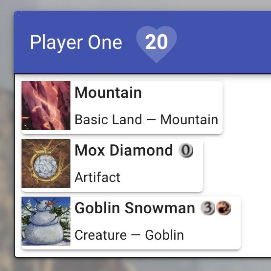
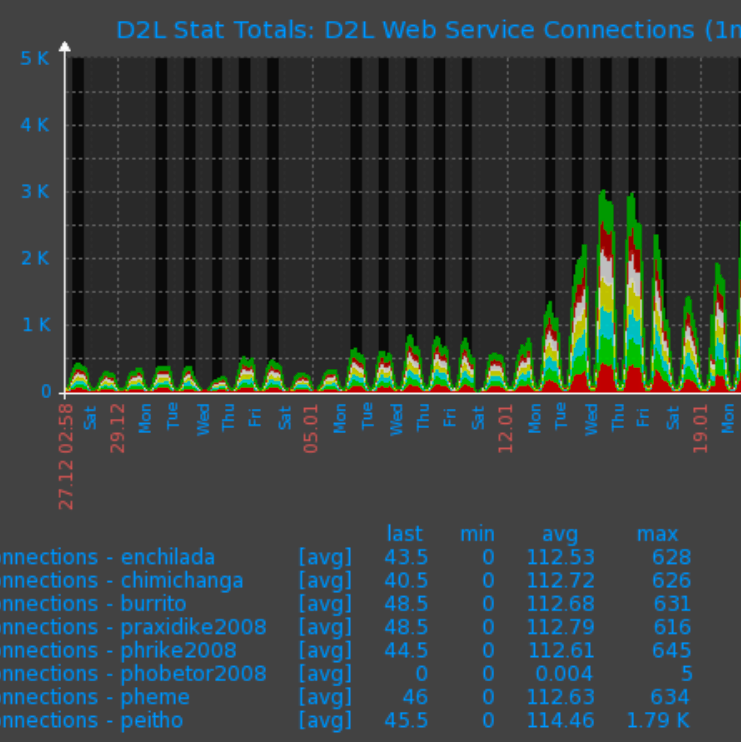
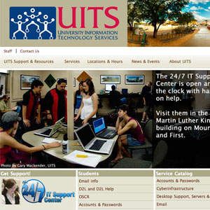
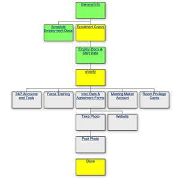
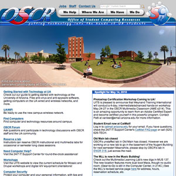
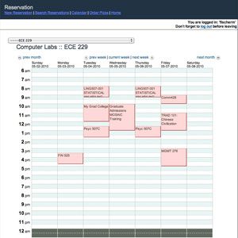
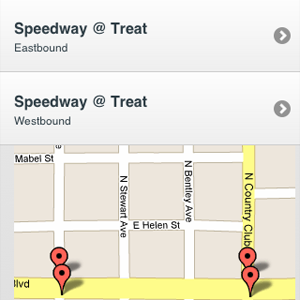

Here is just a small sample of some of the projects I have contributed to in a major way.

During the 2020 COVID pandemic, my brother and I started playing Magic: The Gathering together again
virtually over Zoom. After a couple of games I lamented the fact that we couldn't easily see each
others cards, or read the descriptions. I looked around a bit for virtual shared game table, but
everything I found wanted you to play the entire game within their app. We had all our physical cards,
wanted to play with those, and just needed something to share the state of the game table with each other.
Since I had been out of the web app building business for a few years at this point, I took this as
an opportunity to get familiar with the more modern web application technologies, and this app was
the result.
Read more for details of the app, or see it in action at
mtgvirtualtable.fischco.org.
I had the pleasure of being an adjunct lecturer for the Computer Science department
at the University of Arizona, where I taught CS 337: Web Programming in the Fall of 2014
and Spring of 2016.
As the principle instructor for the course, I was responsible for curriculum planning,
lectures, project assignments and exams.
Read more for details of the class.

I was primarily responsible for implementing the Open Source Enterprise Monitoring software
Zabbix. Aside from the standard sort of monitoring associated with Enterprises, Zabbix
is very maleable, and I was able to integrate with just about anything with a network address.
Making decisions based on data is crucial for any operation today, and Zabbix allows for the
collection of any just about any data you may need.
Read more for details of the project.

The University Information Technology Services (UITS) department is the
central technology department for the University of Arizona. In 2009 I
lead a team to re-design the website to bring it up to date both visually
and technologically.
Read more for details of the project.

UITS hires a lot of student employees each year. Keeping track of who's finished their
paperwork, gotten their picture taken, granted systems access, etc was becoming a big
headache. I led the effort to create a web application to streamline the process, and
make it clear who was on what step of the hiring process. The application has led to
a great reduction of people who 'fall through the cracks' when they're hired.
Read more for details of this application.

The Office of Student Computing Resources (OSCR) at the University of Arizona
was responsible for the open computer labs on campus, free multimedia gear for
checkout, classroom technology, and much much more.
Read more for details
of this site.

This web application was administrative back-end for the OSCR, UITS, and other websites.
The site allowed for room and equipment reservations, user profiles and information,
workshop scheduling, and much more.
Read more for the details of this site.
This web application was built to help the nearly 40,000 students at the U of A migrate
from our in-house email system to Google Apps for Education, which we branded as CatMail.
This application was the user interface to an API developed by our infrastructure team.
Their API communicated with Google to create, activate, and manage accounts. The front
end that I wrote was used to guide students and staff through the opt-in process, and
ensure a great user experience.

This simple web based tool uses the location features of WebKit based browsers to
find nearby bus stops and link to arrival times.